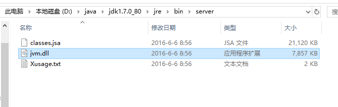

jvm：是Java Virtual Machine（java虚拟机）的缩写。
怎么去理解这个jvm呢？我们可以把它理解成操作系统，如果这个比喻不好理解，你可以夸张的把他理解成“虚拟计算机”,java程序就在这个“虚拟计算机”上运行。
java的跨平台能力就是源自这个“虚拟计算机”；因为jvm封装了java程序与操作系统的交互
或者说jvm实现了java程序与计算机操作系统直接交互的能力，而java程序又运行在虚拟机上。而计算机的操作系统无非就那么几个，
只要虚拟机实现对操作系统交互，java程序就能在这个操作系统上运行。
虚拟机长什么样？
虚拟机其实就是一个软件，这个软件实现java程序和操作系统的交互。
jvm位于jdk的jre目录中的bin目录下，可以把bin目录理解成虚拟机，jvm.dll是虚拟机入口，而父目录中的.dll则是jvm.dll辅助库。

jre:是Java Runtime Environment（java运行环境）。
虚拟机运行的是字节流；字节流是字节码文件（.class文件）转换而来的。
虚拟机本身是没有办法把class文件转换成字节流的，就需要lib中的各种jar包或工具实现这个功能，而把class文件转换成字节流，并且在虚拟机里面运行局面就叫做java运行环境；jre=bin+lib;
jdk:是Java Development Kit（java开发工具包）。
上面的jre运行需要class文件，那么class文件从何而来？
class文件是通过编译而来的。编译和调试主要用来给开发人员使用的。
jdk=jre+开发工具包。
bin:主要提供编译和debugger.
db:用java编写的轻量级的内存数据库，名曰derby数据库
include：java和JVM交互用的头文件；
lib:常用类库，我们常用的String,List等类就是在这里面
jre:java运行环境
总的来说jre包含jvm;jdk包含jre,各种开发工具（idea,eclipse）对jdk进行封装，便于开发者开发。